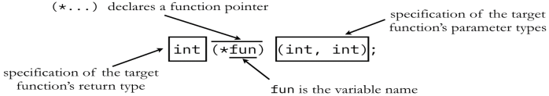

Every variable is a memory location and every memory location has its address defined which can be accessed using ampersand (&) operator, which denotes an address in memory. A pointer is a variable whose value is the address of another variable. In the C programming language, pointers are a powerful feature that allows programmers to manipulate memory directly, enabling them to create more efficient and flexible code.
The general form of a pointer variable declaration is:

Pointer declaration:
int *ip; /* pointer to an integer */
double *dp; /* pointer to a double */
float *fp; /* pointer to a float */
char *ch /* pointer to a character */
The actual data type of the value of all pointers, whether integer, float, character, or otherwise, is the same, a long hexadecimal number that represents a memory address. The only difference between pointers of different data types is the data type of the variable or constant that the pointer points to.
(a) We define a pointer variable
(b) Assign the address of a variable to a pointer and
(c) Access the value at the address available in the pointer variable.
This is done by using unary operator * that returns the value of the variable located at the address specified by its operand.
The following example makes use of these operations:
#include int var = 20; /* actual variable declaration */ }
int main ()
{
int *ip; /* pointer variable declaration */
ip = &var; /* store address of var in pointer variable*/
printf("Address of var variable: %x\n", &var ); /* address stored in pointer variable */
printf("Address stored in ip variable: %x\n", ip ); /* access the value using the pointer */
printf("Value of *ip variable: %d\n", *ip );
return 0;
Output:
Address of var variable: bffd8b3c
Address stored in ip variable: bffd8b3c
Value of *ip variable: 20
A pointer that is assigned NULL is called a null pointer. The NULL pointer is a constant with a value of zero defined in several standard libraries.
Example:
#include
int main ()
{
int *ptr = NULL;
printf("The value of ptr is : %x\n", ptr );
return 0;
}
Output:
The value of ptr is 0.
Note: if a pointer contains the null (zero) value, it is assumed to point to nothing.
The call by reference method of passing arguments to a function copies the address of an argument into the formal parameter. Inside the function, the address is used to access the actual argument used in the call. It means the changes made to the parameter affect the passed argument.
A pointer can point to another pointer (which means it can store the address of another pointer), such pointers are known as double pointer OR pointer to pointer.
Example:
int num = 5;
int *ptr1 = #
int **ptr2 = &ptr1;
Note: This assigns the memory address of the pointer "ptr1" to the pointer "ptr2". The pointer "ptr2" is now a pointer to the pointer "ptr1".
Pointers can also be passed as an argument to a function, using this feature a function can be called by reference as well as an array can be passed to a function while calling.
A function pointer is just like another pointer, it is used for storing the address of a function. Function pointer can also be used for calling a function in C program.